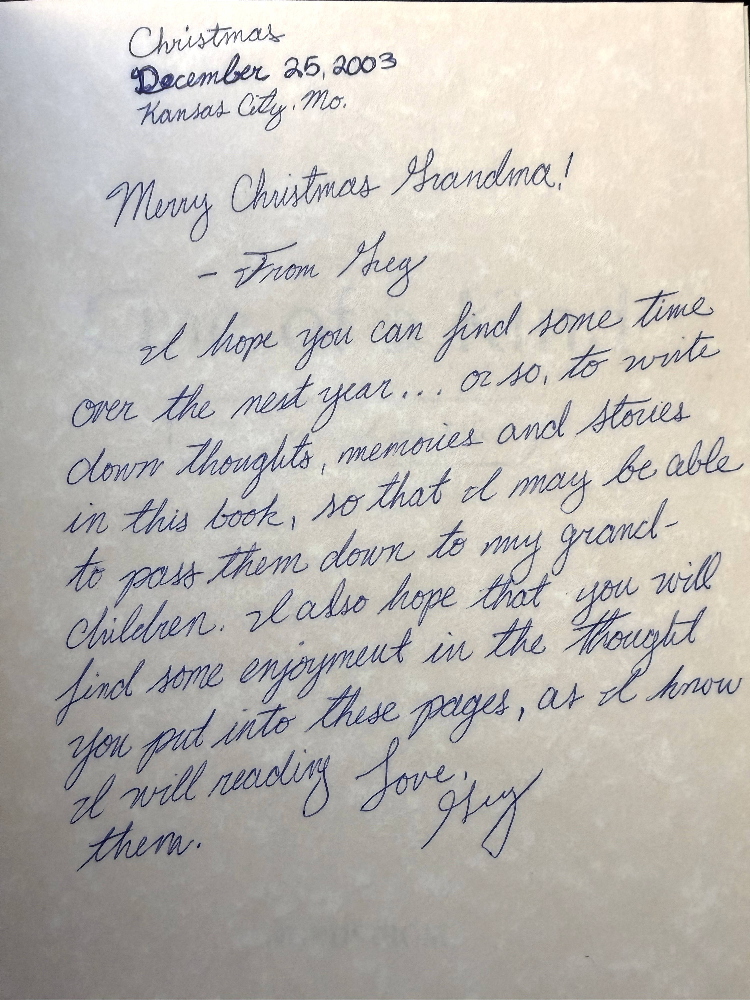
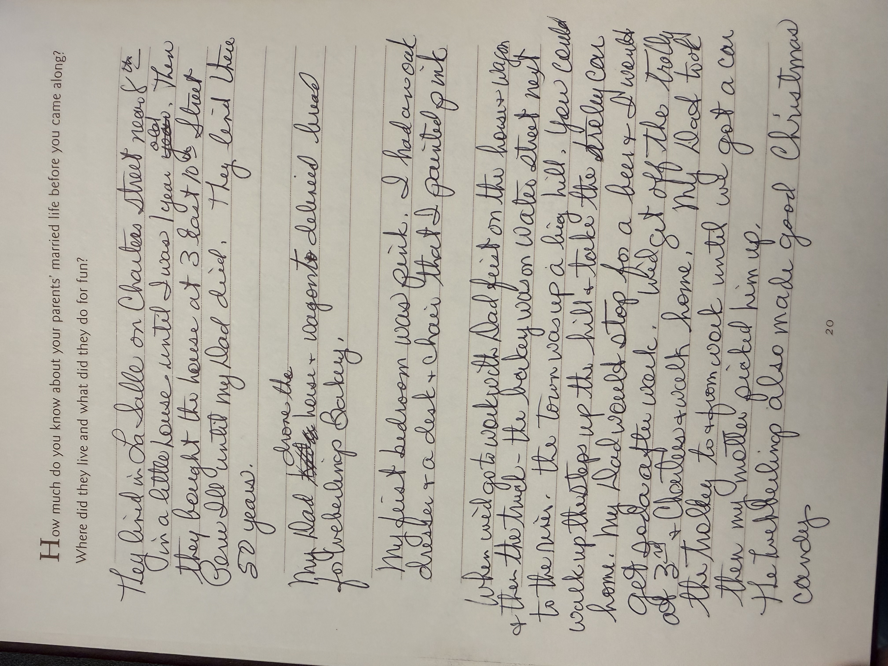

About
Spirantix connects AI learning, safety, and practical tools
We believe seniors should have clear explanations, respectful instruction, and meaningful choices about how artificial intelligence fits into their lives.
How it started
A book from Christmas, 2003
When I was 25 years old, for Christmas in 2003, I gave my grandmother a book called One of a Kind: The Story of My Life, which I found at the Nordstrom's store. It held stories about my grandmother's growing up, her parents and family, and the family that she created. She lived an amazing life, to the ripe age of 98 years old, that carried her from Peru, Illinois, to Queens, NY, to Wichita, KS, and finally to a senior living center in Phoenix, AZ.

The book was over 145 pages long, and she spent the better part of two years filling it in, including dates, through page 30, where she left the ribbon marking the page. Her eyesight had grown poor, and it became harder for her to write. I often wondered how great it would be if I could have captured the stories in her own words and recorded them. Instead of a photo album where each picture might have just a date, and maybe a place or some names written on the back, or on a slip of paper tucked in with it, I could know the story behind each photo — where she was, what she was doing, what she was thinking about. It would be amazing to have those photos and stories collected to pass along for generations to come.

I've also had close family members — some passed and some still with us today — who have had issues dealing with day-to-day life due to Alzheimer's, dementia, and early memory loss. As well as parents of close friends and family who have passed unexpectedly, leaving behind heirlooms and possessions with no stories behind them, in some cases not even a known value. This leaves family members trying to figure out which were prized possessions with sentimental value, what medal was from what country, or why a coin was kept. Which paintings or furniture are of great value, and which aren't. Sometimes family members don't know what to do with these possessions — which to hold onto and which to sell.
This is why I created Spirantix. Because there is so much today that AI can do to help pass along and record the stories and memories behind photos and possessions — truly living photo albums, tools one can still interact with and be helped by, even though they may be having issues with memory, the ability to write by hand or even type, or even their eyesight.
My goal, and the goal of Spirantix, is to help our most important members of our communities: the seniors, who have lived through so much — from wars to depressions to changing technology. In my grandmother's story about her parents, she talks about how her father delivered bread by horse and carriage in Peru, IL. That's just one way technology has changed, and it will continue to change.
My hope is that through our online resources, AI tools, and in-person learning sessions, we can help many, many families to be able to learn from and cherish those memories for generations to come.
— Greg, founder of Spirantix
One mission, three forms of support
Learn, practice, and use tools designed with care
Plain-language education
Free introductory lessons explain AI without assuming technical experience.
Community learning
In-person and video sessions make space for questions, practice, and discussion.
Purpose-built products
Developing agents focus on memory, stories, authenticity, and family possessions.
Interested in a class, a product, or the mission?
Use the single contact form and choose the kind of conversation you would like to start.
Contact Spirantix